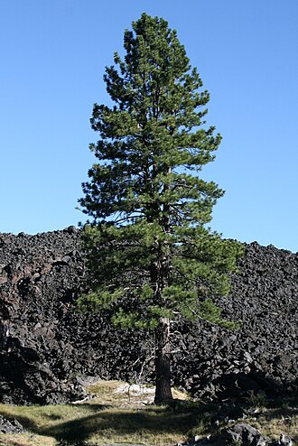

Pinus — Pine (Pinus)
A resin-drenched, sun-hungry veteran who thrives on the sandiest, most nutrient-starved ground anyone else would abandon — wiry, tough, and smells like a fight.
Combat flavor
Pinus is a medium-weight bruiser with a resin-toughness passive — moderate wood density gives decent attack weight, and its pioneer-ecology flavour suits a fast-deployment unit that sets up on contested ground before allies arrive. A fire-adaptation special ability (survives or even benefits from certain hazard effects) would mirror its serotinous-cone ecology.
Real-world facts
Typical / max height25–45 m typical (Scots pine); exceptional individuals over 45 m
Lifespan150–300 years typical; oldest specimens (Lapland, Scots pine) exceed 760 years; Bristlecone pines (Pinus longaeva) reach 5,000 yr — but that species is not the Amsterdam representative
Wood~470–530 kg/m³ air-dry (Scots pine, most common Amsterdam species); Janka varies widely across genus (~2,200–5,000 N depending on species)
Growth speedMedium (shade-intolerant, pioneer; fast in youth on open sites)
Ecology / notable traitsHugely diverse genus (~120 species), found across northern hemisphere from Arctic treeline to tropical highlands; resinous heartwood highly resistant to decay; pioneer species on poor sandy/acidic soils; many species form mycorrhizal networks that share nutrients with surrounding forest; serotinous cones in some species open only after fire, enabling post-fire colonisation; ecologically foundational — entire forest ecosystems depend on Pinus in Eurasia and North America
Gallery
